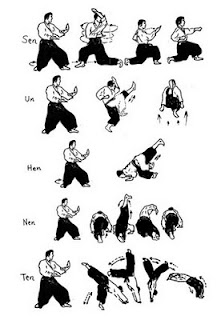
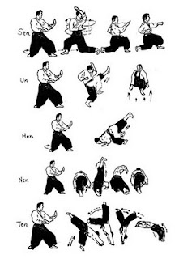
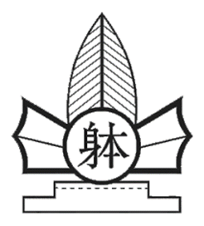

Contents
Taido is a martial art presented to the public in 1965. It was created by Dr. Seiken Shukumine, who was originally from Naha city, Okinawa – the same city as the birthplace of the martial art karate. In the words of the official World Taido Federation website, “Taido aims at teaching how to succeed in society, including to cultivation of health, creativity and strategy.”
Let’s delve into what that means.
What is Taido?
Taido is part of a system of Japanese martial arts belonging to a group of systems known as “Budo”. The style is derived from Gensei-ryu Karate-do, another martial art style founded by Dr. Shukumine. Its roots can be traced back to Chinese boxing, making it part of an elaborate lineage of martial arts styles. Here is a diagram tracing back the roots of Taido:
Characteristics of Taido:
Taido is both a traditional and modern martial art. It is traditional in that its training is carried out under old-fashioned Japanese Budo principles for learning fighting techniques. A certain set of rules must be followed by the Budo-ka (trainer of Budo) while training in the Dojo. Most importantly, a traditional Budo implies that the Budo-ka trains with the purpose of cultivating the art of the Budo system. Taido is modern in that it is continuously in development, and in that it considers modern knowledge of physiology in the realm of sports. Taido’s dynamic nature allows it to function as a competitive sport. While aspects of Taido’s techniques like arm and leg movement can be recognized from Karate, its principles for movement in three-dimensional space and development of power in techniques are new creations. Taido employs gymnastic movements in order to utilize the body’s full range of motion in three-dimensional space. This also allows the Taido-ka to tilt their body axis, which both enables them to avoid incoming attacks and generate energy for their own counter attacks. The three-dimensional principle of Taido is a new principle in the realm of Budo. Other Budo and Bujutsu systems focus on moving in the x-y plane: forwards, backwards, and side-to-side. The experimentation and emotional joy associated with performing Taido’s gymnastic techniques and movements is itself part of the purpose of training. Taido employs its own unique footwork method called Unsoku Happo which is not present in other martial arts. This special type of footwork enables the Taido-ka to adjust their distance and angle from their opponent. The footwork, or Unsoku, also allows the Taido-ka to maintain their coordination and balance. Finally, the footwork is functionally connected to Taido’s techniques mechanically. Because of this, the Taido-ka is aided in moving freely through three-dimensional space. Taido also offers specific rules of practical behavior: Unsoku, Sotai (technical move, related to the fundamental structure of Taido’s technique groups), Seiho (control of the opponent’s movement), Kimegi (final technique), and Gentai (return to a proper stance).
See below for a side by side comparison of more traditional budo (in this case, Taekwondo) moves versus Taido's style of movement:
 
Now let’s look at some of the theoretical aspects of Taido.
The Four Figures of Taido:
Taido makes it a point that people must develop a higher psychological state in which they are self-aware of the energy making their existence and survival in society possible. In order for one to link their own existent energy to the creative energy, one must understand the four figures of Taido and how they form a basis for physical, psychological and practical activities. One must also understand these in relation to Taido’s concepts of Taiki, Doko, Seigyo, and Hokei.
In Taido, a “Figure” refers to the shape, aspect, and nature of things as they should be. Therefore, each figure represents the ideal representation of that aspect of Taido. As a side note, Taido also has a figure of personality, which is related to Hokei. The four main figures utilize the three dimensions of space and are developed mutually respective to each other. Taido techniques aside from tengi are also inclusive in these figures.
Next, let’s go over the three objectives of intentional and non-intentional actions.
Taido’s Three Objectives of Intentional and Non-intentional Action:
People’s lifestyles, as well as reasons for joining martial arts, vary These can include self-defense, cultural immersion, and psychological aspects. These various lifestyles and motives present themselves as both intentional and non-intentional actions in our lives. In Taido, it is believed that these actions should be pursued in their ideal form whether in the context of Taido techniques or in everyday activities in society. Taido offers three tasks to be able to achieve this:
These three tasks are integrated within Taido training. Therefore, training of Taido presents solutions for one to be able to achieve these tasks.
The Three Corresponding Concepts of Taido:
Within Taido lies three underlying fundamental concepts. The concept of Taiki illustrates the presence of life force in the context of Taido training and within people. The concept of Doko illustrates the importance of movement in Taido’s techniques and one’s movement within society. The concept of Seigyo illustrates the relevance of control over one’s opponent in Taido training, as well as one’s control in life. These three concepts make up Taido, and they are all equally necessary. These concepts build off each other – for example, improving one’s Taiki will make their Doko easier and give you more freedom in Seigyo. My Sensei taught me how the three build each other and showed me a diagram to showcase this relationship:
The three concepts also hold meaning in the scope of universal energy. Each concept is associated with a specific domain and construct, integrated into one dimension by the energy that each concept possesses. These form three correlative thoughts comprising of one component from each dimension: Heaven-Nature-Seigyo, Earth-Society-Doko, and Man-Human-Taiki.
Here is a summary diagram of the basic Taido principles:
Taido is practiced by people who are active in society. These people possess the necessary energy to be able to exist. With this energy, one must understand the law of techniques and human behavior while connecting one’s own energy with the creative energy and giving back to society. What Taido means by giving back to the society is making good use of the skills and abilities developed through training in Taido in order to benefit society. This is a key aspect which Taido seeks to fulfill.
One thing to note with Taido’s techniques is that they are not meant to be evaluated individually and performed in the same manner as in training. Rather, the techniques are meant to be evaluated altogether; at a high level of mental and physical training, this enables one to improvise and create all possible means of utilizing the body in any situation.
The following illustration summarizes the aforementioned concepts as a “schematic representation of universal energy” which is shared by everything in nature and its various stages.
Hokei:
On the surface, hokei is a developed routine of techniques and movements which follows a set of guiding principles that focus on training specific technique groups, breathing, defensive tactics and skills. The most common ones are the five -tai hokeis, which train each of the five Taido technique groups (sen, un, hen nen, ten). Taido’s hokei also holds a deeper meaning. Hokei is the physical reflection of Taido’s principles and ideas. Hokei allows for the opportunity to express Taido’s theory in one’s own unique way. The art of hokei is the culmination of technical training and contemplation of Taido’s methodology displayed as an outward expression of one’s personal approach to Taido. The figure of personality plays a role in hokei, tying together the other figures to create an ideal way to perform Taido.
Geometry and Angles:
Taido makes extensive use of geometry, angles, space and measurment. As a three-dimensional martial art, angles are not just limited to the x-y plane; by representing a person as a point in three dimensions and treating movement as a vector, one can visualize a sphere surrounding the point in three dimensional space with the movement vector representing the radius. This is to say that one can move in any direction in space using Taido footwork and movements, effectively controlling the sphere around themselves both offensively and defensively.
One example of a routine that builds training using footwork and angles is Unsoku-Gorendo. This makes use of several Taido footwork patterns in order to move coninously in a circular pattern about a point. As seen in the picture above, footwork patterns Ka, Gen, and Ko move with a 45º angle, while So, In, and Ten demonstrate straight line motion. The routine has five lines as follows:
1: Gen Ka Ten Ko Ten
2: Ko Ka Ten Gen Ten
3: Gen Ten Ko Ka Ten
4: Ko Ten Gen Ka Ten
5: Gen Ka So In Ko Ten Ko
Each of the first four lines reveals an angular displacement of 3π/4 radians, or 3/4 of a rotation. The final line completes a full revolution of 2π radians. In total, this adds up to 4 * 3/4 + 1 = 4 full rotations about the central point.
Footwork can be combined with Taido technique movement styles to utilize the full three-dimensional space surrounding the practitioner. Sentai movements employ spinning about the z-axis within the x-y plane. Untai movements move vertically along the z-axis, as well as forwards within the x-y plane. Hentai movements involve tilting the body axis at an angle relative to the z-axis, while Nentai movements display horizontal aerial spinning about the z or y axes. Tentai movements involve a combination of spinning about the x or y axes, moving forwards or backwards along the x-y plane, and moving vertically with respect to the z-axis. Techniques within these groups can be combines with footwork to move anywhere within the three-dimensional space about the user. For example, one could change their angle in the x-y plane using a movement such as Ka or Ko, then combine this with a Sentai technique to rotate about the z-axis in order to build momentum and move forard toward the opponent. In this way, many approaches can be taken to move from point A to point B and fully utilize the space around, perhaps for an optimized attack towards an opponent, or for an evasion form an attack while simultaneously repositioning oneself to regain the offensive.
Taido's Name and Symbol:
The name Taido comes from the Japanese characters “Tai” (躰) and “Do” (道). The character “Tai” is composed of the characters “Mi” (身), which means mind, and “Karada” (体), which means body. Together they translate to human mind and body, or human being. “Do” is a term meaning “the way of”. Together, they form the word Taido (躰道) which means “the way of the body”.
The Taido symbol is a spearhead containing a circular shield with the character “Tai” inside. It draws its inspiration from a Chinese tale of an impenetrable shield and an unbreakable spear. When put to the test, the shield was pierced but the spear had broken. The symbol demonstrates that both offense and defense are necessary to protect oneself.
Relevance of Taido in Japan and Around the Globe:
Taido is known as the “Budo of the 21st century”. Its roots come from a long line of tradition and historically renown martial art forms, which are central to Japanese culture. Taido aims at applying scientific methodology and traditional values to the evolution of martial arts. Shukumine himself believed that Taido’s goal is to “equip its practitioners to function at a high level in society”. Taido functions as a martial art which seeks to fulfill purpose at every level in an individual, in society and in the grand scope of our reality. Shukumine himself was a philosopher and scholar of Budo theory, and he sought to create a martial art form which expanded on his three dimensional Gensei-ryu karate-do to emphasize the union of mind and body, of internal systems and external form into a singular purpose, whether to defend oneself or to live out one’s life. This union of “mi” and “karada” with the purpose of fulfilling the intentions of the Taido-ka is the purpose of Taido.
As all things, Taido is not complete nor perfect. Taido is many things: free sparring, practicing techniques, the art of hokei, cultivating health health, thinking creatively, challenging oneself and much more. One who trains in Taido is meant to understand the principles of Taido and apply them in one’s own context and understanding creatively and is free to adapt the theories of Taido to one’s own circumstances. In this manner, “do” is fulfilled. Taido is how one applies the ideas of Taido in the right situation. Taido is what we make of it.
Currently, there are 11 member nations of the World Taido Federation. These countries compete in official global Taido tournaments and aim to further the scope of Taido. There is currently one Taido school in America that is officially recognized by the World Taido Association, which I am currently a member of. I hope that in the future more countries join the World Taido Federation and that we can collectively grow Taido and share our unique experiences with each other.
As one more note, Taido contains extensive theory and material which cannot be fully discussed on this article. I encourage you to learn more about Taido if you are interested and to try to practice its principles and techniques. The joy and understanding of Taido comes from doing it oneself.
躰道
Credits:
Learn more:
Discover. | Learn. | Grow.
 üá∫üá∏ Copyright © 2021 Athanasios Grivakis
üá∫üá∏ Copyright © 2021 Athanasios Grivakis